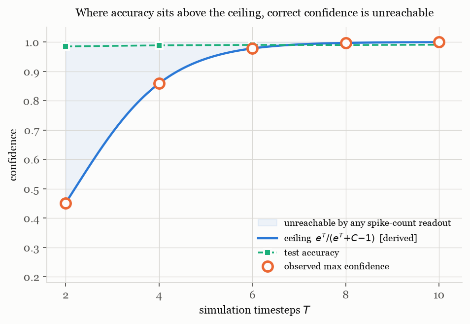
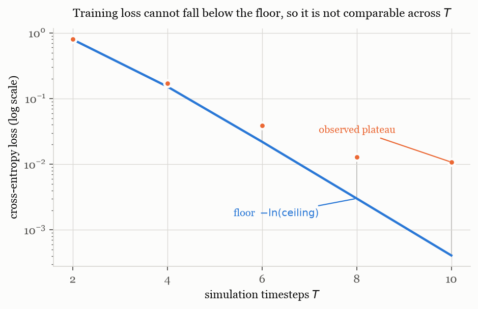
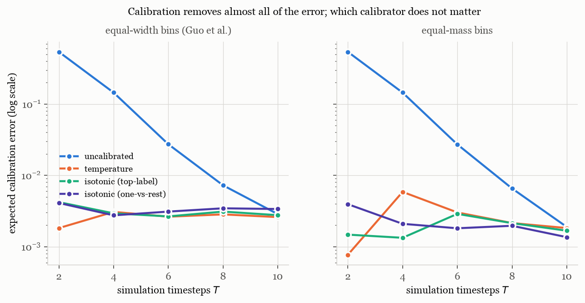
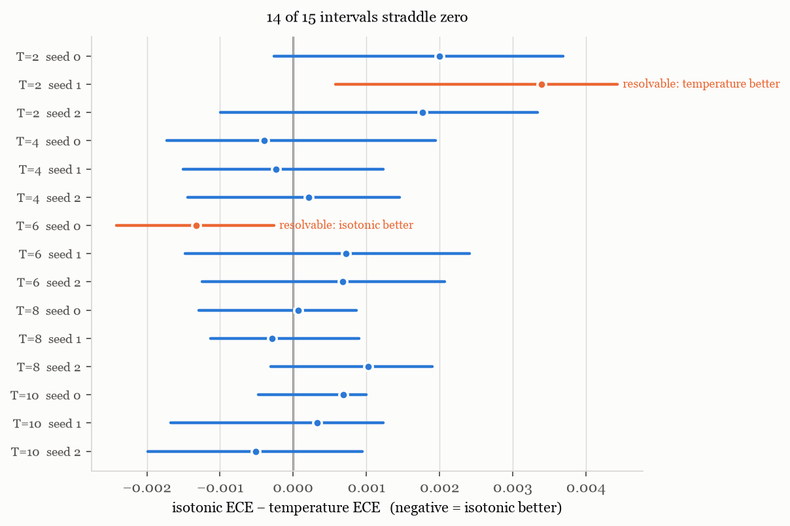
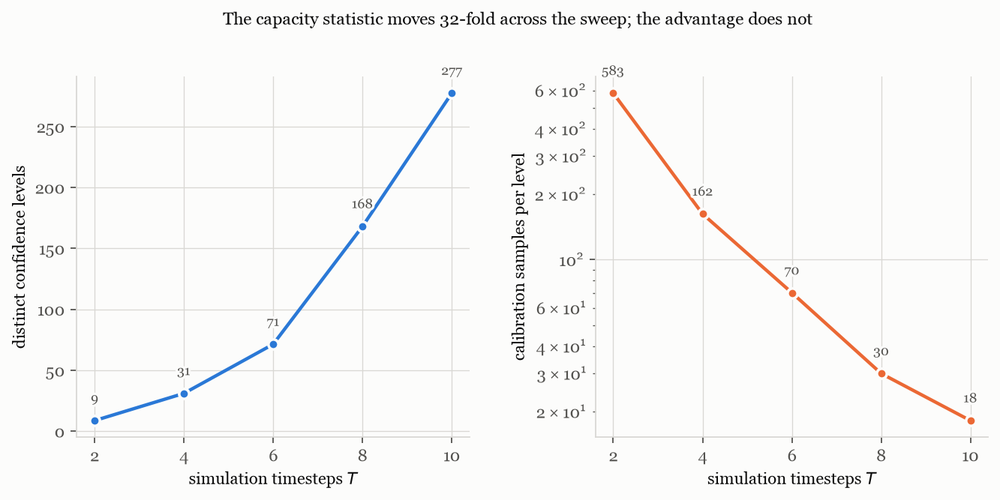
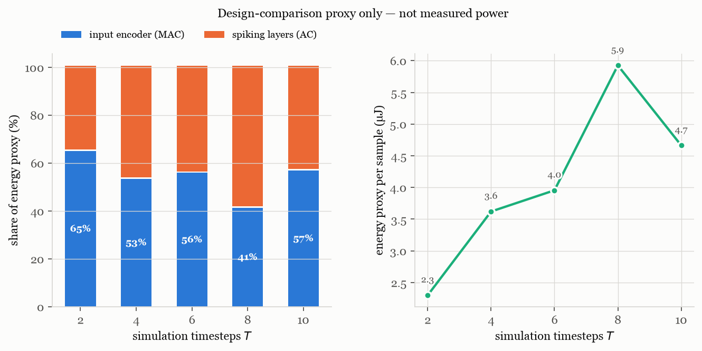

Post-hoc confidence calibration for event-driven spiking neural networks
A directly-trained spiking neural network read out by spike counts is severely miscalibrated at low timestep counts, and the reason is structural rather than a training failure: with C classes and counts bounded by T, the largest confidence the readout can express is capped, and at T = 2 that cap sits far below the model's own accuracy. Post-hoc calibration removes almost all of the resulting error — expected calibration error falls from 0.5386 to roughly 0.002. Which calibrator does the removing does not matter: temperature scaling and isotonic regression are statistically indistinguishable at 14 of 15 runs across five timestep settings and three seeds.
The per-class output of the network is an integer spike count in [0, T], and
confidence is the softmax over those counts. The most extreme reachable count vector puts
every spike on one class, so confidence has a hard upper bound:
For 10 classes that is 0.451 at T = 2. A model with 98.5% accuracy cannot emit a confidence anywhere near its own correctness rate, so it is forced into underconfidence before any calibrator is involved. The trained models saturate the bound exactly — observed maxima match the derived value to roughly one part in 1013, which is float64 rounding rather than approximation.
| T | Ceiling (derived) | Max confidence observed | Difference | Test accuracy | Uncalibrated ECE | Share explained |
|---|---|---|---|---|---|---|
| 2 | 0.4509 | 0.4509 | 2.8×10−13 | 0.9850 | 0.5386 | 99.2% |
| 4 | 0.8585 | 0.8585 | 2.1×10−13 | 0.9887 | 0.1447 | 90.0% |
| 6 | 0.9782 | 0.9782 | 3.8×10−14 | 0.9902 | 0.0273 | 44.2% |
| 8 | 0.9970 | 0.9970 | 1.4×10−13 | 0.9898 | 0.0072 | n/a |
| 10 | 0.9996 | 0.9996 | 3.9×10−13 | 0.9908 | 0.0029 | n/a |
The explanation applies only where the ceiling binds. By T = 8 accuracy has fallen below the ceiling, correct confidence becomes reachable, and the small residual error is ordinary overconfidence with a different cause — which is why the last two rows are marked not applicable rather than given a negative percentage.

Cross-entropy on spike-count logits cannot fall below −ln(ceiling), for the same reason: the best reachable logit vector gives the true class exactly the ceiling probability. The floor is 0.797 at T = 2 and 0.0004 at T = 10, a range of three orders of magnitude driven entirely by T.
| T | Ceiling | Floor = −ln(ceiling) | Observed plateau | Excess over floor |
|---|---|---|---|---|
| 2 | 0.4509 | 0.7966 | 0.8052 | 0.0086 |
| 4 | 0.8585 | 0.1526 | 0.1667 | 0.0141 |
| 6 | 0.9782 | 0.0221 | 0.0359 | 0.0138 |
| 8 | 0.9970 | 0.0030 | 0.0134 | 0.0104 |
| 10 | 0.9996 | 0.0004 | 0.0090 | 0.0086 |
The practical consequence: training loss is not comparable across T. A T = 2 model plateauing at 0.81 and a T = 10 model plateauing at 0.009 are equally converged; the first is sitting on a floor that is 2,000 times higher. Read naively, the low-T curve looks like a failure to train and invites "fixes" for a problem that does not exist. Convergence in this study is judged on validation accuracy, never on loss.

This study was designed around a hypothesis: that isotonic regression should beat temperature scaling by a margin that grows as T falls, because a spike-count readout is discrete and a scalar temperature is the wrong tool for a discrete confidence distribution. That hypothesis is not supported.
| T | Uncalibrated | Temperature | Isotonic (top-label) | Isotonic (one-vs-rest) | iso − temp |
|---|---|---|---|---|---|
| 2 | 0.5386 | 0.0018 | 0.0042 | 0.0041 | +0.0024 |
| 4 | 0.1447 | 0.0031 | 0.0029 | 0.0028 | −0.0001 |
| 6 | 0.0273 | 0.0026 | 0.0027 | 0.0031 | +0.0000 |
| 8 | 0.0072 | 0.0028 | 0.0031 | 0.0035 | +0.0003 |
| 10 | 0.0029 | 0.0026 | 0.0028 | 0.0034 | +0.0002 |
At T = 2 — the most discrete regime in the sweep, with 583 calibration samples per distinct confidence level — temperature scaling beat isotonic, by a wider margin than at any other T and in the opposite direction to the prediction. From T = 4 upward the difference is indistinguishable from zero.

Pre-registered 2026-09-10 · before any calibrator was fitted to a trained model
Temperature scaling will match or beat top-label isotonic at every T, and the isotonic advantage will not be statistically resolvable at any T — the 95% paired-bootstrap interval on the equal-width ECE difference will straddle zero at T in {2, 4, 6, 8, 10}.
Outcome: the letter of the prediction is false. Fourteen of fifteen intervals straddle zero. The fifteenth, T = 6 seed 0, resolves in isotonic's favour with a CI of [−0.0024, −0.0003], so the claim that every interval would straddle zero is wrong. One resolvable result in fifteen at a 95% level is what multiple comparisons produce unaided — the expected count under no true difference is about 0.75 — so it is not evidence of an isotonic advantage, but the prediction as written did not survive and is recorded here unedited.

The hypothesis had a sharper form: the isotonic advantage should track the number of calibration samples per distinct confidence level, for which T is a proxy. That quantity moves 32-fold across the sweep, from 583 samples per level at T = 2 to 18 at T = 10 — exactly the manipulation the mechanism said the advantage should follow. The advantage was flat and near zero across all of it.

The case for spiking networks is energy, so the sweep records a SynOps proxy. The result is worth stating because it complicates that case: the input encoder — the first layer, which receives real-valued event frames rather than spikes and is therefore costed as multiply-accumulates — is between 41% and 65% of the modelled energy at every timestep setting. The layer that does not receive spikes is roughly half the bill.

Every number on this page comes from the two artifacts linked below, and both regenerate from a clean checkout. Training on Apple silicon is not bitwise deterministic, so trained weights vary slightly at a fixed seed; splits and calibrator fitting are kept on CPU RNG and scikit-learn and are exactly reproducible.
git clone https://github.com/abrarahasanadil/spikecalib
cd spikecalib
python3 -m venv .venv && source .venv/bin/activate
pip install -r requirements.txt
python scripts/check_env.py # verifies MPS + a real LIF forward pass
python scripts/fetch_data.py --dataset nmnist --timesteps 2 # repeat for 4, 6, 8, 10
python scripts/run_sweep.py --epochs 50 --patience 5 # 15 runs, ~2.7 h on an M-series Mac
python scripts/extract_readout_stats.py # per-T readout cache
python scripts/make_figures.py # regenerates every figure here| Item | Value |
|---|---|
| Split fingerprint | e524beccace851af |
| Split sizes | 50,000 train / 5,000 val / 5,000 calibration / 10,000 test |
| Seeds | 0, 1, 2 |
| Epoch cap / patience | 50 / 5 — all 15 runs stopped early, between 10 and 21 epochs |
| Python | 3.13.1 |
| PyTorch | 2.14.0 (MPS backend) |
| SpikingJelly | 0.0.0.0.14 |
| scikit-learn | 1.9.0 |
| Bootstrap | 1,000 resamples, seeded per run |
The split fingerprint is a hash of the exact index sets. Any run reporting
e524beccace851af used byte-identical splits, so a result can prove which
split produced it rather than assert it.
sweep.csv — all 60 rows (15 runs × 4
calibration arms), one row per arm per run, with both ECE estimators, their bootstrap
intervals, the paired difference and its interval, AUROC, distinct confidence levels,
energy proxy, epochs run, early-stopping flag and split fingerprint. Everything plotted
above can be replotted from this file alone. It is also in the repository at
results/sweep_nmnist.csv.